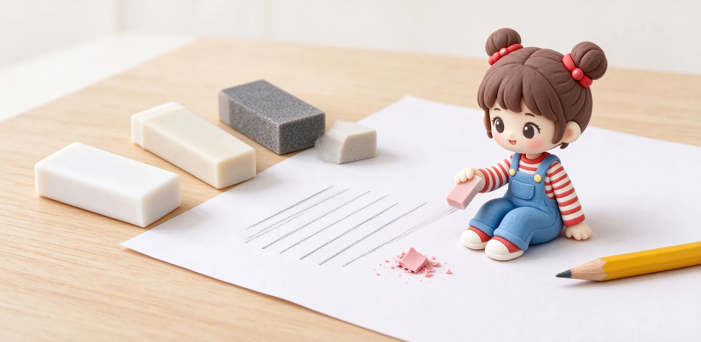

語意摘要：早期人們用麵包擦鉛筆字，直到 1770 年才發現橡膠能擦筆跡。現代橡皮擦主要分 PVC（塑膠擦）、TPR／TPE（熱塑性橡膠）、天然橡膠與含研磨劑的砂擦：前三種用來擦鉛筆，乾淨又護紙；砂擦用來對付墨水痕，但會磨損紙面。擦不乾淨多半是太髒、太硬或紙張太滑，弄破紙則通常是擦太用力或用錯了砂擦。
在橡膠之前，人們是用麵包擦鉛筆的
說出來有點噴飯，但在橡皮擦發明以前，歐洲人真的是用麵包心去擦鉛筆字。直到 1770 年，英國化學家 Priestley 發現一種天然橡膠可以把鉛筆痕擦掉，效果比麵包好又不臭，橡皮擦才誕生；1839 年 Goodyear 發明硫化橡膠後，橡皮擦才變得耐用不黏手。
理解這段歷史有個好處：你會明白橡皮擦的本職是「把石墨顆粒粘起來帶走」，不是「用力磨」。越像這個原理的越好用，越偏離越傷紙。
四種常見材質：擦什麼、傷不傷紙
| 材質 | 手感／殘屑 | 用來擦 | 注意 |
|---|---|---|---|
| PVC 塑膠擦 | 偏硬、耐用、殘屑較細粉 | 日常鉛筆、考試 | 便宜好買，含塑化劑 |
| TPR／TPE | 柔軟、殘屑結塊好清 | 鉛筆、手帳細節 | 較環保低味，售價略高 |
| 天然橡膠擦 | 軟黏、擦得乾淨 | 素描、鉛筆 | 放久會老化龜裂 |
| 砂擦（含研磨劑） | 粗糙、會磨紙 | 墨水、鋼筆跡 | 絕別拿來擦一般筆記 |
市面最常見的白色橡皮擦，多數是 PVC 塑膠擦——把 PVC 粉加塑化劑加熱壓成方塊，硬實、不容易乾掉壽命長，缺點是殘下來的細粉容易四處飛。近年很紅的低塵、集屑款，不少改用 TPR，橡皮擦過後會結成一條長屑，用手一捏就起來，桌面上乾淨很多。

為什麼會擦不乾淨、甚至弄破紙
擦不乾淨的三個原因
- 橡皮擦太髒：表面沾了鉛筆垢，等於拿髒布擦桌子，越擦越花，定期在白紙上磨掉表層即可。
- 紙太滑或太光：銅版紙、某些手帳紙上石墨附著強，一般擦難以連根拔。
- 用錯等級：2B、4B 這種軟鉛筆顏料多，要用偏軟、黏性高的橡皮擦才擦得動。
弄破紙通常是這兩種錯誤
一是擦太用力、來回猛搓，薄紙根本承受不住；正確方式是輕壓、小幅度、一個方向帶過。二是誤用了砂擦。砂擦裡混了浮石之類的研磨顆粒，本來就是用來磨掉鋼筆墨水痕的，拿它擦一般筆記，等於用菜瓜布洗絲質衣服。
考試與日常怎麼挑？一條記住的原則
台灣文具行常見的选择裡，Tombow MONO 系列從 1963 年賣到現在，是很多人心中的標準款；想要精細只擦一行，可選筆型細擦（如 MONO zero，直徑約 2.3mm），在格子間準確除字不波及旁邊。飛龍 Pentel 的塑膠擦與自動橡皮擦在台灣也約 15 到 25 元，平價好入手。
幾個常見疑問一次說清楚
常見問題 FAQ
橡皮擦擦不乾淨怎麼辦？
為什麼橡皮擦一擦就把紙弄破？
PVC 跟 TPR 橡皮擦哪個好？
考試要用哪種橡皮擦？
橡皮擦可以擦鋼筆或原子筆字嗎？
資料來源與核實依據
- 橡皮擦的歷史（最初使用麵包、1770 Priestley 發現橡膠、1839 Goodyear 硫化橡膠）（國立臺南藝術大學碩士論文（李若嘉，2019））
- TPR Erasers vs PVC Erasers: Key Differences（殘屑、氣味、護紙比較）（Ideanexus Community）
- MONO zero 高精度筆型橡皮擦（直徑 2.3mm）（Tombow 蜻蜓）
- 飛龍 Pentel 台灣塑膠擦與自動橡皮擦商品價格（飛龍文具 Pentel 台灣）
相關文章推薦

木桿鉛筆還值得用嗎？六角桿、硬度標示與削筆方式解析
木桿鉛筆不是老派，而是建築師、漫畫家與考試考生的最愛：輝柏嘉 Castell 9000 從 1905 年賣到現在，16 種硬度、SV 接著防斷芯，一支大約 30 到 60 元。

鉛筆裡有鉛嗎？鉛筆芯 HB、2B 標示與石墨冷知識
鉛筆裡沒有金屬鉛，筆芯是石墨加黏土燒結而成。會叫「鉛筆」是因為古羅馬人真的用金屬鉛在蠟板上寫字，後來換成石墨但名字留了下來。
文具冷知識 15 條：橡皮擦、便利貼、燕尾夾背後的真實故事
桌上那些不起眼的小文具，很多都是誤打誤撞發明的：橡皮擦原本是拿錯東西、便利貼是一條失敗的膠水、燕尾夾是兒子為寫稿父親做的。